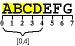

PHP version: 5
Required modules:
standard, spl, simplexml, dom, pcre
Required packages:
all.php, errors.php, autoload.php, AutoloadException.php, cast.php, Types.php, ArrayBothType.php, TypeInterface.php, Printable.php, ArrayIntType.php, ArrayStringType.php, BooleanType.php, ClassType.php, FloatType.php, IntType.php, NullType.php, ObjectType.php, ResourceType.php, StringType.php, CastException.php, Sortable.php, Comparable.php, Hashable.php, Strings.php, Hash.php
class it\icosaedro\utils\Bytes
|
+--(it\icosaedro\containers\Printable)
+--(it\icosaedro\containers\Sortable)
| `--(it\icosaedro\containers\Comparable)
+--(it\icosaedro\containers\Hashable)
| `--(it\icosaedro\containers\Comparable)
`--(Serializable)
Immutable array of bytes that wraps a PHP string
Version: $Date: 2012/02/14 07:44:33 $
Author: Umberto Salsi <salsi@icosaedro.it>
The main difference between an oject of this class and an ordinary PHP string is that this object calculates and stores once for all its own hash value. Moreover, several methods are simply wrappers over the str*() set of PHP standard functions, but with a more consistent, intuitive and safer interface.
The name of this class is a generic "Bytes" because a more appropriate "String" cannot be used (it is a keyword) and, anyway, PHP strings are much more bare arrays of bytes without any specific encoding than real strings of characters. In this document the terms "string" and "array of bytes" or even simply "bytes" are then assumed synonim terms.
New instances must be created through the factory method:
use it\icosaedro\utils\Bytes; /*. Bytes .*/ function BF(/*. string .*/ $s) { return Bytes::factory($s); } $msg = BF("Bye world!"); $bye = BF("Bye"); $hello = BF("Hello"); if( $msg->startsWith($bye) ) $msg = $msg ->remove(0, $bye->length()) ->insert($hello, 0); echo $msg; # ==> Hello world!The factory method takes care to do some useful obtimizations saving memory by caching shorter strings.
Missing features: toUpper(), toLower(), regular expressions. Search, replace and comparison case-insensitive.
{
staticit\icosaedro\utils\Bytesfactory(
string $s)Builds a new Bytes object out of a string
Shorter strings (currently those of length 0 or 1 bytes) are cached internally to save memory space. Allows "fluid interface" programming Bytes::factory("abc")->...
Parameters:
$sThe string to wrap inside an object. Return: Object that wraps this string. If the string is NULL, NULL is returned.
int length()Returns the number of bytes in this array
Return: Number of bytes in this array.
int getByte(
int $i)Returns the byte at a specified index
Parameters:
$iIndex of the byte. The first byte has index 0. Return: Number in [0,255].
Throws:
- unchecked
OutOfRangeExceptionThe index is either < 0 or > $this->length().string toLiteral()Returns a PHP-compliant, pure ASCII, literal string in double-quotes
Useful to display arbitrary strings that may contain control characters or invalid encoding. All the ASCII control characters and the
$ \ "characters are converted to the form \xxx, where xxx is the octal code of the byte, with the exception of the usual control characters as LF, CR etc. that are rendered as escape sequences "\n", "\r" etc. Example:echo Bytes::factory("abc\n")->toLiteral(); # ==> "abc\n"Return: PHP, pure ASCII, literal string.
string __toString()
implementsit\icosaedro\containers\PrintableReturns the bytes as a PHP string
Return: The bytes. Since this is an arbitrary sequence of bytes without any particular encoding, consider to call
it\icosaedro\utils\Bytes::toLiteral()instead in order to get a readable result whatever the binary content might be.int compareTo(
object $other)
implementsit\icosaedro\containers\SortableCompares two strings based on their binary content
Non locale-aware: bytes are compared left to right according to their value in [0..255].
Parameters:
$otherThe other array of bytes to compare with. Return: Less that 0 if $a<$b, greather than zero if $a>$b, zero if the two strings are equal.
Throws:
- unchecked
CastExceptionThe other object is NULL or is not exactly instance of this class.it\icosaedro\utils\Bytesappend(
it\icosaedro\utils\Bytes$other)Appends bytes to the end of these bytes
Parameters:
$otherAnother array of bytes. Return: The array of bytes resulting appending the other to this.
it\icosaedro\utils\Bytessubstring(
int $a,
int $b)Return a subrange of this string
The NULL string has no subranges. The valid range of the indexes is:
0 <= $a <= $b <= strlen($s)Example:
$s = new Bytes("ABCDEFG"); $s->substring(0, 4) ==> "ABCD" $s->substring(2, 2) ==> ""Parameters:
$aBeginning of the range. $bEnd of the range. Return: The substring, whose length is exactly ($b-$a) bytes. Note that if $a==$b, then the empty string is returned.
Throws:
- unchecked
OutOfRangeExceptionIf the range is invalid.it\icosaedro\utils\Bytesremove(
int $a,
int $b)Removes a range of bytes from this string
For example, if this string is "ABCD", removing the range (1,3) yields "AD"; instead, remove($i,$i+1) removes one byte at index $i.
Parameters:
$aBeginning of the range. $bEnd of the range. Return: This string with the substring removed. The resulting string is ($b-$a) bytes shorter than this. Note that the string removed is just $this->substring($a,$b).
Throws:
- unchecked
OutOfRangeExceptionInvalid range: must be 0 <= $a <= $b <= $this->length().it\icosaedro\utils\Bytesinsert(
it\icosaedro\utils\Bytes$s,
int $at)Inserts a string in this string at a given position
Parameters:
$sString to insert. $atIndex position. Return: This string with the given string inserted at the given position. The resulting string is exactly $this->length() + $s->length() bytes long.
Throws:
- unchecked
OutOfRangeExceptionInvalid range: must be 0 <= $at <= $this->length().boolean startsWith(
it\icosaedro\utils\Bytes$head)Returns TRUE if $this starts with $head
Parameters:
$headThe expected beginning of this. Return: True if $this starts with $head. The empty string is the beginning of any string. Any string starts with itself.
boolean endsWith(
it\icosaedro\utils\Bytes$tail)Returns TRUE if $this ends with $tail
Parameters:
$tailThe expected tail of this. Return: True if $this ends with $tail. The empty string is the end of any string. Any string ends with itself.
int indexOf(
it\icosaedro\utils\Bytes$target,
int $from = 0)Returns the starting position of the first occurrence of the target string in this string
Parameters:
$targetTarget substring to search. The empty string can always be found at the very beginning of the search, so $from is returned. $fromSearch target in the range [$from,$this->length()] of this string. Return: Index of the beginning first matching target, or -1 if not found.
Throws:
- unchecked
OutOfRangeExceptionIf $from outside [0,$this->length()].int lastIndexOf(
it\icosaedro\utils\Bytes$target,
int $from)Returns the starting position of the last occurrence of the target string in this string
Parameters:
$targetTarget substring to search. The empty string can always be found at the beginning of the search, so the length of $this string is returned. $fromSearch target in the range [0,$from] of this string. Return: Index of the beginning of the first matching target, or -1 if not found.
Throws:
- unchecked
OutOfRangeExceptionIf $from outside [0,$this->length()].it\icosaedro\utils\Bytestrim(
string $bytelist = " \t\n\r\x00\x0B")Returns a copy of this string with leading and trailing bytes specified removed
Parameters:
$bytelistList of the bytes to remove. The special sequence "A..B" specifies the range from "A" to "B". The default value lists the space characters as they may be appear to be encoded in the ASCII charset and in some other extended ASCII charsets, including ISO-8859-* and UTF-8. Return: This string but with all the leading and trailing bytes specified removed.
it\icosaedro\utils\Bytesreplace(
it\icosaedro\utils\Bytes$target,
it\icosaedro\utils\Bytes$replacement)Replaces any occurrence of the target string with the replacement string
Search and replacement is performed scanning this string from left to right.
Parameters:
$targetAny occurrence of this string is replaced. $replacementReplacement string. Return: This string but with any occurrence of the target string replaced.
Throws:
- unchecked
InvalidArgumentExceptionIf the target is the empty string.it\icosaedro\utils\Bytes[int] explode(
it\icosaedro\utils\Bytes$separator)Explode this string in pieces
This string is scanned from left to right.
Parameters:
$separatorAny non-empty string that separates pieces. Return: Pieces of this string that were separated by the given separator.
Throws:
- unchecked
InvalidArgumentExceptionSeparator is empty.staticit\icosaedro\utils\Bytesimplode(
it\icosaedro\utils\Bytes[int] $pieces,
it\icosaedro\utils\Bytes$separator)Implode the array of strings
Parameters:
$piecesStrings to be joined. int getHash()
implementsit\icosaedro\containers\Hashableboolean equals(
object $other)
implementsit\icosaedro\containers\ComparableCompares these bytes with others bytes for equality
Parameters:
$otherBytes to compare with. Return: True if the other is not NULL, belongs to the exact same class of this (not extended), and it contains the same array of bytes.
string serialize()
implementsSerializable
void unserialize(
string $serialized)
implementsSerializable
}
Generated by PHPLint Documentator